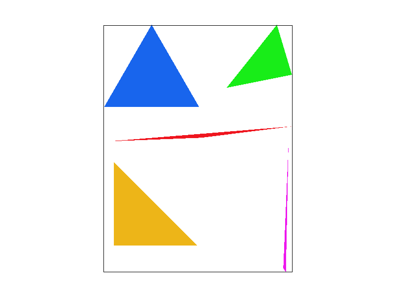
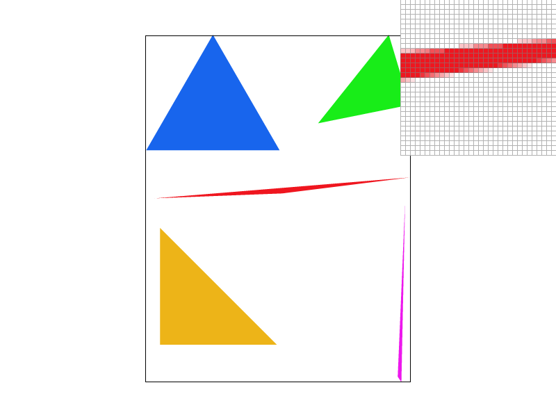
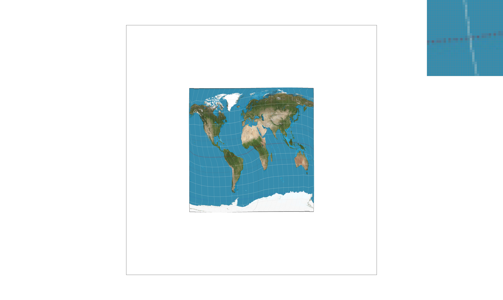
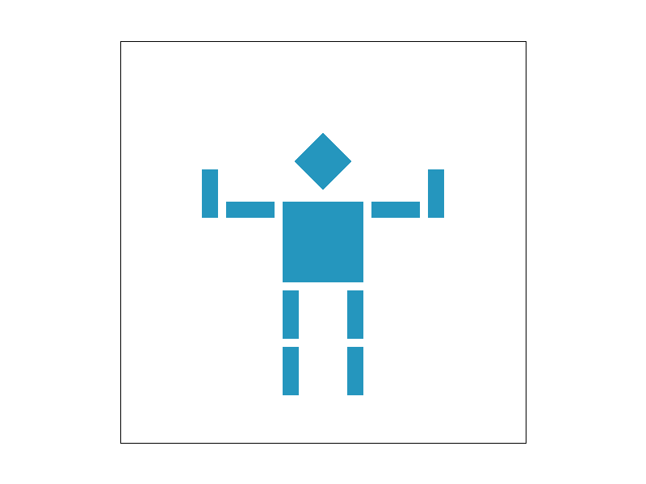
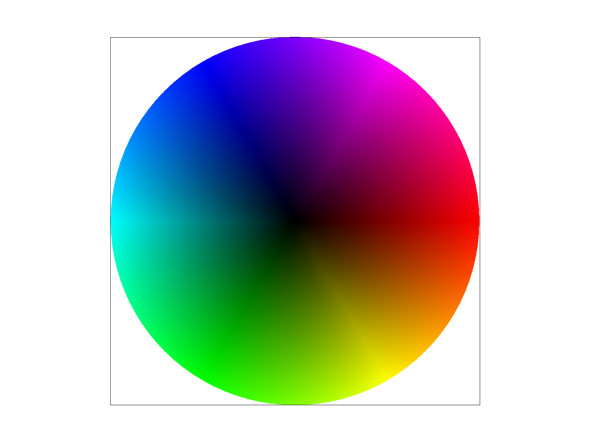
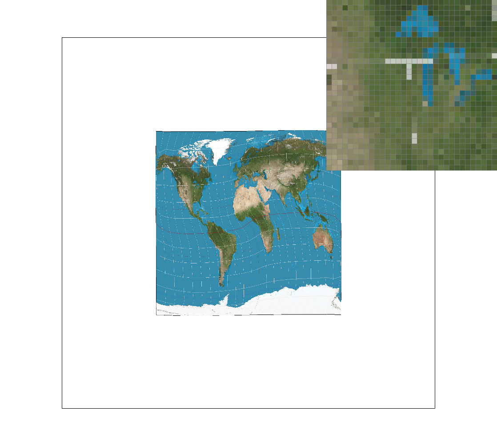
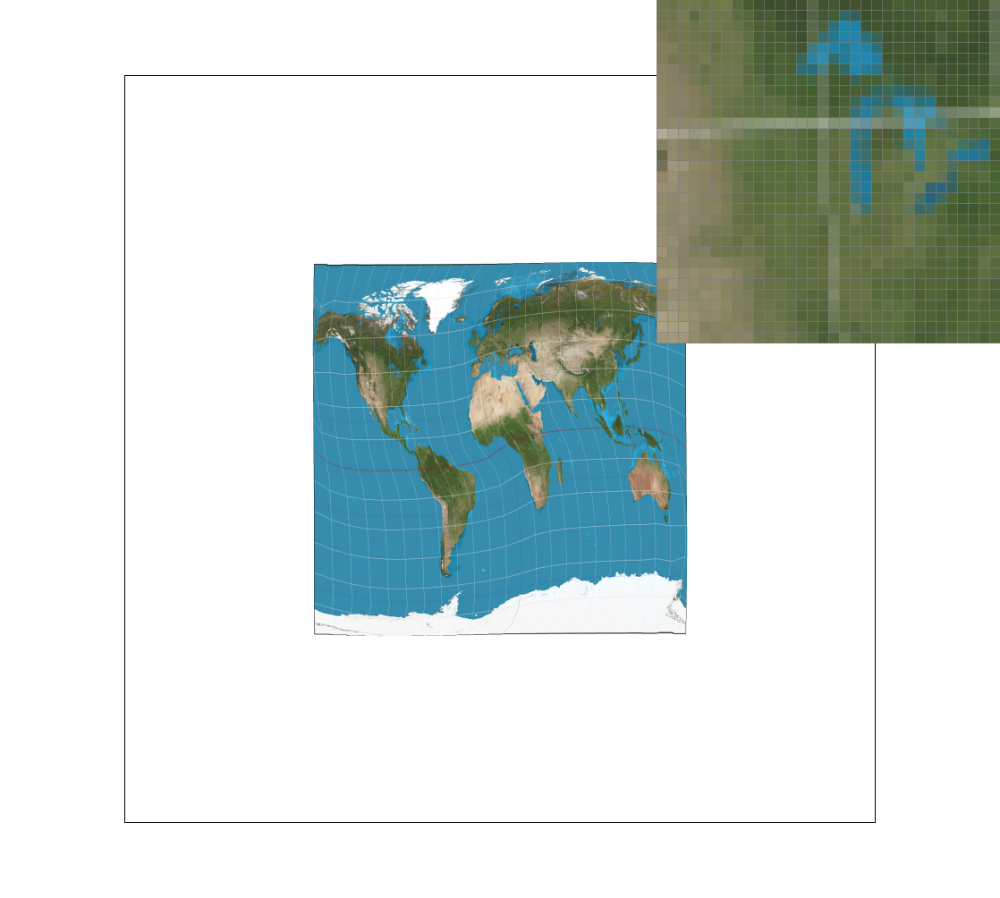

A simple SVG renderer with texture mapping, antialiasing and more!
Task 1: Drawing Single-Color Triangles
To begin the assignment we made a very simple function that finds the max and min x and y coordinates for the all three vertices given. This allows us to make a bounding box for the triangle as a whole which we can iterate over to run point-in-triangle tests per each pixel's center.
Speaking of point-in-triangle we needed a function to test this in the first place! To do this we calculated the respective barycentric coordinates for each point using for the given vertices using lambda functions.

Extra Credit:
This worked fairly well however we wanted our rasterizer to work a little bit faster. To begin we measured how long a draw triangle call took in nanoseconds with our current method. Here is 5 outputs of the average difference between chrono::steadyclock::now() at the start and end of the function.
Function took 963542 ns
Function took 942833 ns
Function took 979750 ns
Function took 1038042 ns
Function took 959667 ns
Function took 969500 ns
In short about a millissecond per call. We wanted to optimize this by minimizing the amount of pixels we actually check.
First we ditched the bounding box. We still iterated from min to max x however now using the slope of the triangle edges we found different min and max y values per x value. Then we considered that if we knew the first and last y-pixel that was valid, we could assume that all pixels in between were also valid. This brought our run time to the following.
Function took 7833 ns
Function took 7666 ns
Function took 7625 ns
Function took 8292 ns
Function took 7584 ns
Function took 10125 ns
Task 2: Antialiasing by Supersampling
To antialias made a few small modifications. First, we increased the size of the sample_buffer by the square root of the sample rate. Second, we scaled all the verticies passed into the draw triangle functions by the same amount such that their relative positioning is identical. Third, for each group of pixels (based on the sample rate) we averaged the color of all the pixels in the grouping and set the final pixel's color to it.
1x4x

16x
Extra Credit:
Jitter Sampling: to implement jitter sampling, we used the C++ random library to create a random value between 0 and 1 for both the x and y axis. We replaced the 0.5, 0.5 coordinate we used to get the center of every pixel with the random jitter sampled coordinate.

16x, not jittered16x, jittered
Interestingly you can see that the jittered version tends to have a little more definition to the white line, though with the caveat of artifacting in the blue.
Task 3: Transforms
We tried making cube man have both his arms up like its "absolute cinema".

Extra Credit(New feature in the gui): The key R now rotates the entire view finder by a random degree between 0 and 360. To implement this we edited the redraw command and added an angle attribute to as a global variable. At initialization the angle is 0, but after pressing the button it changes. We then made a transformation matrix that translates to the center of the screen, rotates the angle, and then translates back. We added this matrix to the svg.draw command in between the ndc_to_screen and svg_to_ndc matrices and the drawing of the canvas outline.
Task 4: Barycentric coordinates
Barycentric coordinates are effectively a way of measuring how close a pixel is to each vertex of the triangle. If we draw lines to each vertex of the triangle, we can create three areas oposite each vertex. Naturally, if the point is closer to any given vertex the area of the section opposite the vertex grows, and the further it is, the area shrinks. Therefore, we can use barycentric coordinates to say how much each vertex represents a given point allowing us to color any pixel inside the triangle as a ratio of the colors at its verticies.

Task 5: "Pixel sampling" for texture mapping
To begin, we're given corresponding UV coordinates for every vertex of the triangle. The UV coordinates represent the vertices of a triangle on a flat texture area. From here, we can use Barycentric coordinates to estimate the UV coordinate that best cooresponds with our position within the triangle we wish to draw. This leads to two potential options, we may either choose the nearest coordinate (by just rounding) on the texture or we can average the nearest ones, this is known as bilinear level sampling.
Interestingly you can see that bilinear filtering has a great affect at 1x sampling but falls off greatly at 16x where there is basically no difference.

1x, Nearest1x, Bilinear16x, Nearest

16x, Bilinear
Task 6: "Level" with mipmaps for texture mapping
Next, what if we're rendering a texture on a really small portion of screen space? If we just used linear or bilinear we will just get one or a few pixels that represent what likely would be representative of a large portion of the texture space. Therefore, we use lower resolution versions (different levels) of each image instead. To do this we checked how much of the texture space we're actually translating over (even though we only ever walk one pixel at a time in our screen space, one pixel might map to many on the texture). From here we take the \(log_2\) of the difference along the x and y axis and use the larger result to choose which level of downsampling we use. Further, we may choose to use a single level or a weighted average of the two levels, since the \(log_2\) of the difference rarely just lands on a clean value.
With regards to performance, for texture mapping, naturally bilinear would take longer than nearest values as we sample more areas of the texture, though this performance loss provides especially for textures that are mapped to small areas (see above) can provide increased clarity. However this effect naturallly will fall off as the sample area approaches the resolution of the actual texture as you can see with the images below or the 16x sampled image above. For level mapping, nearest and linear level mapping I would think are fairly close to each other performance wise since you only sample at most one other texture level, though visually I think linear level mapping provides a much better result, as nearest causes smooth lines looks like they start smearing. Though both look decently smoother than level 0.